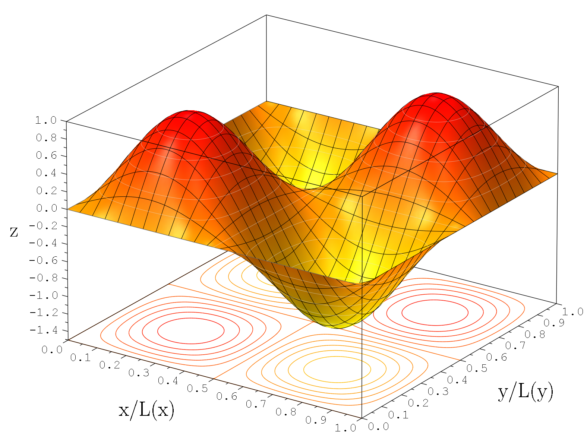

Fisica Cuantica
El estado cuántico es el estado físico que en un momento dado tiene un sistema físico descrito por la mecánica cuántica.En física clásica, teóricamente, al medir una magnitud física en un sistema varias veces, obtendríamos un mismo valor. Sin embargo, en física cuántica al medir una magnitud física podríamos obtener un valor diferente en mediciones diferentes sobre estados cuánticos idénticos (o si la medida es repetible, cada vez que se mida la magnitud puede aparecer un valor diferente). Por tanto, para estudiar los resultados de una medición cuántica, se recurre a una distribución de probabilidad.



Introducción
La física cuántica es una rama de la física en la que el proceso de medida no es determinista, esto significa que dados dos sistemas físicos con el mismo estado cuántico, al medir sobre ellos una cierta magnitud no tiene por qué obtenerse el mismo valor. Esto contrasta fuertemente con la noción de medición en la mecánica clásica. La mecánica cuántica es una teoría que da cuenta de la naturaleza probabilista del proceso de medida y tanto su formalismo, como la noción de estado cuántico, son abstracciones para poder explicar el hecho experimental de indeterminación de la medida. En el formalismo de la mecánica cuántica los sistemas físicos se representan matemáticamente por un vector de estado para estados puros o mediante una matriz densidad para estados mixtos. Equivalentemente el vector de estado es representable también como función de ondas (en representaciones de base continua). Tanto el vector de estado como la matriz densidad permiten predecir valores posibles de los experimentos asociados a la medición de observables físicos. El estado cuántico es una representación matemática abstracta, por lo que existe una fuente de dificultades al tratar este formalismo de la teoría por primera vez ya que no existen buenos análogos clásicos que resulten intuitivos. Especialmente, que el estado cuántico no es el estado en el que se puede encontrar, ya que al observar un objeto cuántico se obtiene siempre un valor propio para ese observable, aunque el estado del sistema no sea un estado propio para ese observable.
Ejemplos
Partícula en un estado ligado y sin espín
Dada una partícula de pequeñas dimensiones, cuya presencia se circunscribe a una región bastante localizada del espacio, como por ejemplo un electrón de átomo, su estado cuántico puede representarse adecuadamente mediante una función de onda. En ese caso el estado cuántico es una función de cuadrado integrable definida en todo el espacio tridimensional. Naturalmente la función sólo tomará valores significativamente diferentes de cero en una región alrededor del núcleo atómico del tamaño aproximado del átomo. El módulo de dicha función al cuadrado está asociado a la densidad de probabilidad de encontrar a la partícula en un determinado punto, de tal manera que: El conjunto de todas las funciones que potencialmente pueden representar el estado cuántico de un electrón en un átomo constituye un espacio vectorial de dimensión infinita. El interés de ese espacio de funciones es que permite definir operadores lineales que representan el efecto de una posible medida, así el valor medio de una posible medida viene dado por: mientras que los posibles valores para la misma magnitud coincide con el espectro del operador. La distribución de probabilidad de los diferentes valores viene dada por el tercer postulado de la mecánica cuántica. Un estado ligado, es un estado cuántico de un sistema físico que es combinación lineal de estados estacionarios correspondientes a valores de la energía del espectro puntual de hamiltoniano del sistema.Partícula en un estado de colisión
La definición matemáticamente precisa de estado no ligado es compleja. Intuitivamente una partícula que ejecuta un movimiento en una región finita del espacio tiempo o que con probabilidad uno está localizada en una región finita es un estado ligado. Los estados de colisión son estados no ligados y por tanto carecen de esas propiedades. El ejemplo más sencillo de estado de colisión es una partícula con un momento perfectamente definido, cuyo estado se puede representar por una onda plana. Un estado de colisión o estado no ligado, es un estado cuántico tal que la amplitud de probabilidad no se anula fuera de ninguna región finita del espacio físico (ni tampoco decae exponencialmente ni uniformemente fuera de ninguna región finita). Los estados de colisión por tanto representan partículas que pueden moverse por una región infinita del espacio y que cuya función de onda además no cae abruptamente hacia cero (de manera exponencial). Una partícula sin espín con un momento perfectamente definido Nótese dicha función como las que representan a muchos otros estados de colisión no es una función normalizable (es, decir de cuadrado integrable) y por tanto no puede representarse como un elemento de un espacio de Hilbert ordinario. Con el fin, de poder tratar rigurosamente los estados de colisión dentro de un formalismo similar al de los espacios de Hilbert ordinarios se introdujeron los espacios de Hilbert equipados, donde los espacios de colisión son elementos duales de un cierto subespacio nuclear de dicho espacio de Hilbert. Los estados de colisión son muy empleados en teoría cuántica de campos y física de partículas para representar experimentos de colisión de partículas. En muchos de esos experimentos la interacción entre dos tipos de partículas tiene lugar en una región relativamente pequeña y localizada del espacio, fuera de esa región donde se da la interacción las partículas se mueven libremente sin interacción y por tanto son estados no ligados que pueden realizar un movimiento no acotado, y por esa razón se representan como estados de colisión no renormalizables (donde la amplitud de probabilidad de presencia no decae a cero). Estado puro de varias partículas El teorema espín-estadística conlleva que el estado cuántico de un sistema de partículas indiscernibles (y, por tanto, idénticas) debe ser un autoestado de cualquier operador de intercambio de partículas. Dado que esos operadoradores son idempotentes solo admiten como valores propios +1 o -1 y por tanto cualquier estado físicamente realizable debe ser simétrico o antisimétrico respecto al intercambio de dos partículas cualesquiera. El teorema espín-estadística además prueba que un estado de fermiones indiscernible debe ser un estado antisimétrico mientras uno de bosones indiscernibles debe ser simétrico. Estado mezcla de varias partículasEstado coherente
Cuanto más libre de efecto sea la situación, (como en el caso del experimento del gato de Schrödinger), más cuántico es el sistema. En palabras más simples, el estado cuántico es uno en el que el átomo está completamente libre de cualquier interacción con variables que puedan cambiar su estado puro, ya sea de luz, calor, o cualquier otra interacción, y con la interacción se perturba fuertemente el sistema, es decir, desaparecen los efectos cuánticos. El proceso por el cual esa perturbación produce la pérdida de algunas características del comportamiento típicamente cuántico se conoce como decoherencia cuántica.